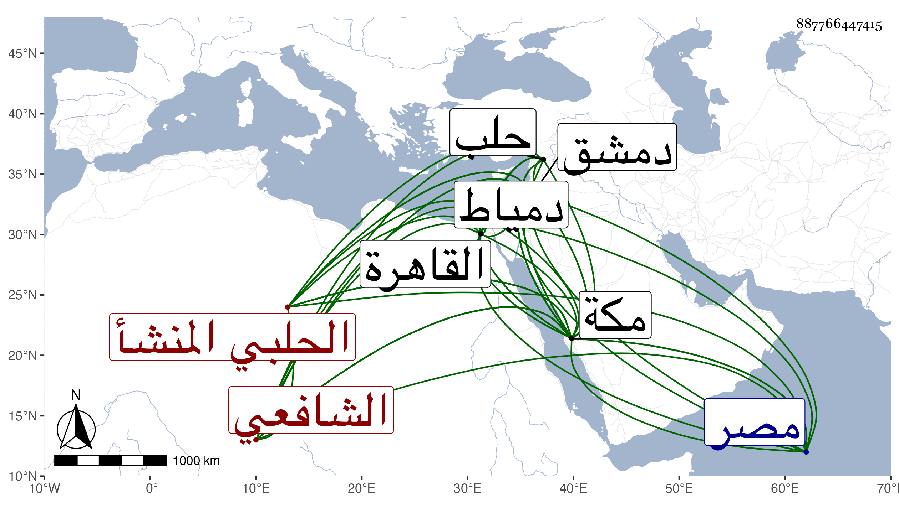

0902Sakhawi.DawLamic.ITO20230111-ara1.EIS1600.887766447415
Biography ID: 887766447415
189
محمد بن عبد الله بن شاه خان الشمس أبو عبد الله بن الجمال الحلبي المنشأ الدمشقي الاستيطان الشافعي نزيل مكة ويعرف بالعذول بفتح المهملة وضم المعجمة وآخره لام . ولد بعيد الثلاثين وثمانمائة . وانتقل منها وهو طفل مع أبيه إلى حلب ثم لدمشق وأخذ فيها السلوك عن ناصر الدين بن البيطار ، ودخل القاهرة فلقي فيها شيخنا والعلم البلقيني وغيرهما وفي مصر المحب الفيومي المصري قارئ الحديث بجامعها العمري والبهاء بن القطان والجلال البكري وأقام بها نحو أربع سنين وأخذ عن بعضهم في آخرين ودخل دمياط وغيرها ثم رجع إلى دمشق وصحب السيد المحب ابن أخي التقي الحصني وغيره من السادات ، وحج غير مرة ثم قطن مكة وكان يحضر دروس القاضي وأخيه بها والجمالي ويعقد مجلس الذكر وقتا وربما أفاد بعض المريدين لأنسه بأبواب العبادات ونحوها ومراجعته في كثير مما يروم التفقه فيه ولما كنت بمكة لازمني في كثير مما أخذ عني ومني رواية ودراية وزاد اغتباطه بذلك وربما اشتغل في أصول الدين وغيره ، وقد كتبت له إجازة حسنة في التاريخ الكبير بعضها ولكثيرين فيه اعتقاد بل كان كل من البرهان وحسين ابني قاوان يميل إليه مع غيرهما من ذوي اليسار ، ثم تضعضع حاله ولكنه نعم الرجل متجمل كثير الطواف والعبادة والرغبة في الخير .
